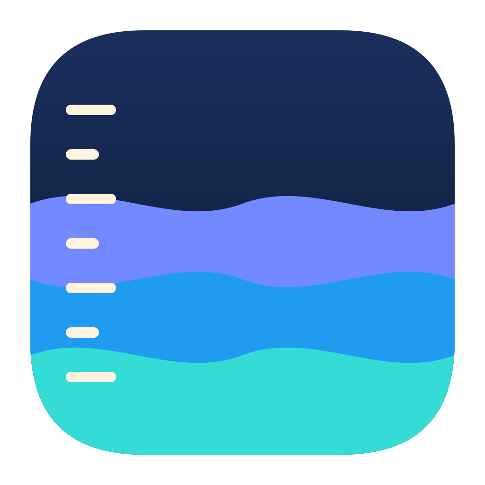

Sluice
Many accounts.
One pool.
Automatic, for your coding agents.
brew install --cask vikng-dev/tap/sluice
62%
Never runs dry
A pool per project
~/work
~/home
acme/*
In your prompt
>
Your own accounts
The providers' own clients
Stays on your Mac
Not endorsed by Anthropic or OpenAI